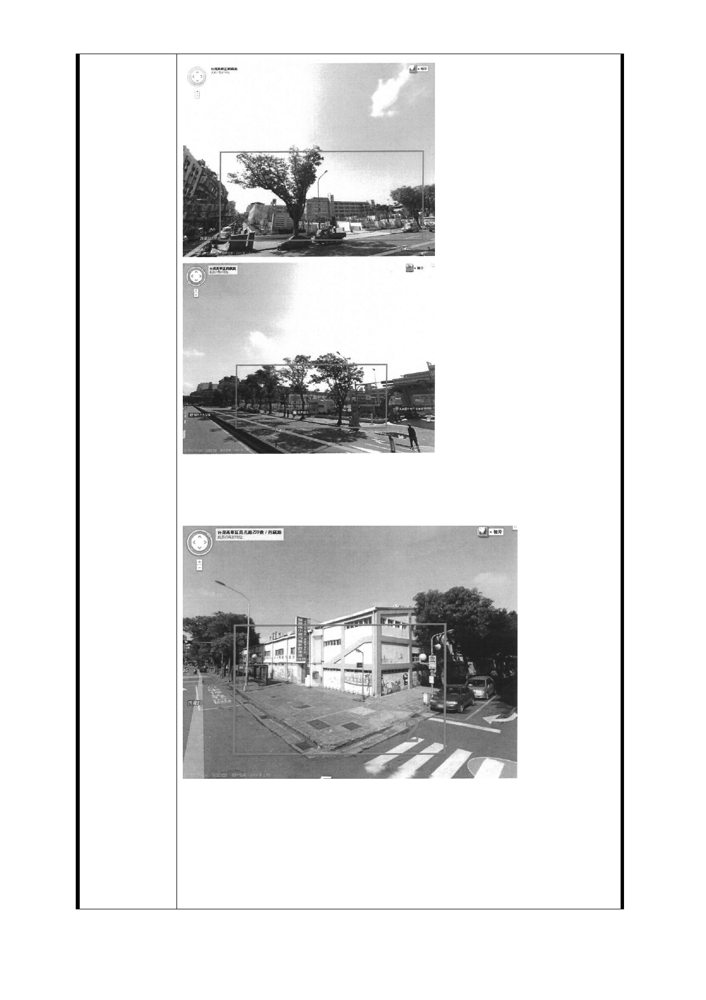

紅線區範圍為萬華國中附近空地，此處有地下停車場及大型
通風井，可將捷運出入口與此處連續，更將捷運出入口效益
發揮更大
紅線範圍為雙園國小附近空地，為三角窗，無住宅出入口，
不擔心影響居民居住，捷運出入口設置於此，更可以連結公
車路線，帶來交通連結便利更好的效益。
訴求二：強烈要求單邊捷運出入口
（
LG03
捷六萬華區青年段地號
130
、
131
為龍虎公寓國宅，
大多數居民同意聯合開發）
- 98 -